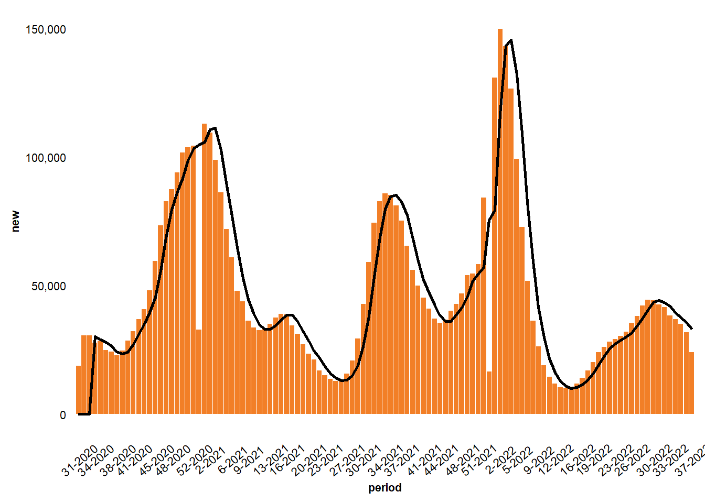
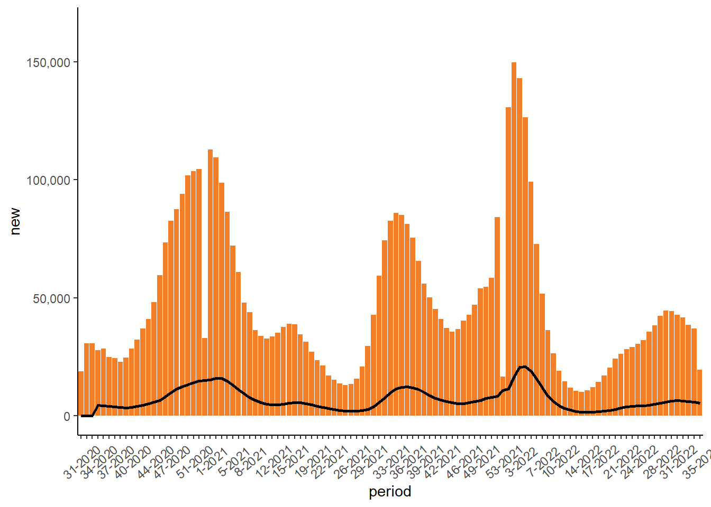
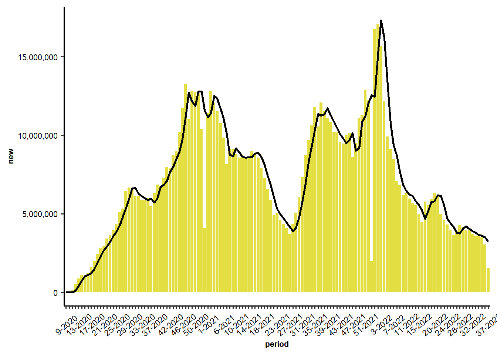
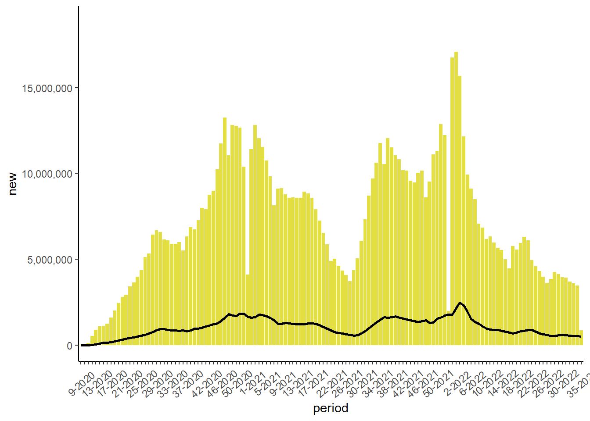

CDC COVID-19 Report
Weekly Change in COVID-19 Cases, United States
indicator | cum | new | avg | 7cum | change |
Cases^[] | 94385669 | 117073 | 85762 | 180.8 | -6.6% |
Hospital Admissions^ | 5,235,025 | 5154 | 5106 | 10.8 | -5.0% |
Deaths* | 1041280 | 818 | 404 | 0.9 | -5.4% |
Test Volume† | 948,720,838 | N/A | 502,779 | 952.8 | -2.5% |
Test Positivity† | 9.5% | N/A | 13.6% | N/A | -6.4% |
Weekly Change in COVID-19 Cases, United States

Weekly Change in COVID-19 Hospital Admissions, United States

Weekly Change in COVID-19 Deaths, United States

Weekly Change in COVID-19 Testing, United States
